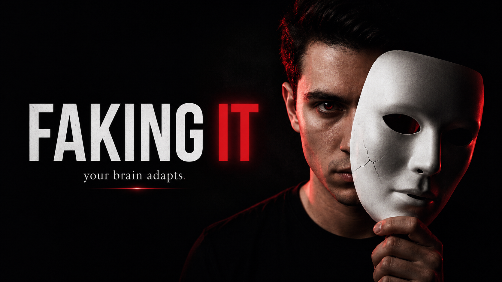

Selected work / Long-form script
Faking It: The Psychology of Confidence
What if confidence doesn't have to arrive before you act? A story-led exploration of self-perception, body language and the gap between feeling ready and showing up.

16–28, growth-oriented, primarily Indian
Educate through storytelling
Action can sometimes precede belief
Hook → curiosity → research → reframe → action
Before the full script / 03 options
Hook variations
Three possible openings from the original draft. The recommended option is marked; choose one for the final cut rather than stacking all three.
“Ek second ke liye sochna — last time kab tumne kuch naya kiya, sirf is liye ki tum confident lag sako... jab ki andar se kaanp rahe the?”
“Aaj main tumhe bataunga — scientists ne prove kiya hai ki confidence FEEL karne se pehle aata hai... FAKE karna parta hai.”
[Pause 2 seconds. Let the question land. Then smirk slightly.]
“2003. Harvard University. Ek student apni seat par baitha hai — presentation se pehle puri tarah se toota hua.”
“Uska ek professor aata hai aur kehta hai — bathroom mein jao. 2 minute khade raho — haath upar, chest out. Aur woh karta hai.”
“Presentation? Outstanding.”
“Yeh luck nahi tha. Yeh science tha.”
[Let that breathe. Then look at camera.]
“Kya tum jante ho fake confidence aur real confidence mein ek cheez common hai?”
“Dono kaam karte hain. Aur aaj main tumhe bataunga kyun.”
[Pause. Lean in.]
The working draft / 0:00–5:00
Full script
Hook
0:00–0:40
[Open on you, standing with direct eye contact. Casual but charged energy.]
“Ek cheez batao mujhe.”
“Tumhare life mein ek moment tha — job interview, crush ke saamne, stage pe — jab tumhara dil bol raha tha: BHAAGO.”
“Lekin tumne... act kiya. Composed rahe.”
[Slight pause. Tilt head.]
“Usne kaam kiya na?”
“Toh tumne jab uss din confidence fake kiya... tumne actually psychology ki sabse powerful technique use ki.”
“Aur aaj hum usi ke baare mein baat karenge.”
[Beat drop / light music begins.]
“Faking It — The Psychology of Confidence.”
Problem / curiosity
0:40–1:30
[Slightly leaning forward. Tone: curious and conspiratorial.]
“Hum sab yahi socha karte hain na — confident log naturally aise hote hain.”
“Jaise woh confidence kahi se khareed kar laye ho.”
[Light laugh / smirk.]
“Lekin, science kuch aur hi kehta hai.”
“1967 mein ek psychologist — Daryl Bem — ne ek theory di. Naam tha: Self-Perception Theory.”
“Theory simple thi lekin effect mind-bending.”
“Hum apne aap ko waisa nahi dekhte jaise hum hain — hum apne actions dekhte hain, aur phir decide karte hain ki hum kaun hain.”
[Let that sink in. Repeat for emphasis.]
“Matlab — pehle action, phir belief.”
“Confidence... feeling nahi hai. Yeh ek output hai.”
“Toh sawaal yeh uthta hai — kya hum apna brain literally rewire kar sakte hain sirf apne body ko alag tarike se move karke?”
[One eyebrow raise. Cut.]
Main content
1:30–3:30
[Shift to an energetic, slightly cinematic tone. Use hand gestures. Walk or move slightly.]
“2010. Harvard Business School.”
“Social psychologist Amy Cuddy aur uski team ne kuch kiya jo aaj tak popular culture ka part hai.”
“Unhone logon ko 2 groups mein baanta.”
“Group 1 ko bola gaya — High Power Poses karo. Seedhe khade ho, haath hips par, chest out — superhero wali body language.”
“Group 2 ko bola — Low Power Poses karo. Shoulders in, arms crossed, chin down.”
“Sirf 2 minutes.”
[Pause for effect.]
“Result?”
“High Power Pose group mein testosterone levels increase hue. Cortisol — stress hormone — decrease hua.”
“Aur jab unhe mock interviews diye gaye — unki performance dramatically better thi.”
“2 minutes. Alag pose. Alag result.”
[Step closer to camera. Lower your voice slightly, like sharing a secret.]
“Lekin yaar — yeh sirf body ki baat nahi hai.”
“2022 mein, The Many Smiles Collaboration — 19 countries, 3,800 log.”
“Research ek cheez test kar rahi thi — agar tum forcefully smile karo... kya tum actually better feel karte ho?”
“Answer: Haan.”
“Sirf muscles ko us position mein le jaana — brain ko signal bheja jaata hai: Sab theek hai yaar.”
[Grin.]
“Tumhara face tumhare brain ka remote control hai.”
Insight / twist
3:30–4:20
[This is the “whoa” moment. Slow down. Almost philosophical.]
“Ab yahan ek twist hai.”
“Log sochte hain — fake karna toh dishonesty hai na?”
“Nahi yaar.”
“Think about it — jab ek baccha cycle chalana seekhta hai, kya woh cyclist hota hai Day 1 se?”
“Nahi. Lekin woh act karta hai jaise woh hai. Aur ek din — woh ban jaata hai.”
[Soft music underneath.]
“Yahi Daryl Bem ka Self-Perception Theory kahta tha — tumhara brain tumhara behavior observe karta hai aur identity banata hai accordingly.”
“Tum confident act karte ho — brain note karta hai: Yeh toh confident banda hai.”
“Baar baar. Baar baar. Baar baar.”
“Aur ek din... yeh fake nahi rehta.”
[Direct look at camera. Let this line land.]
“Fake it till you make it.”
“Yeh Amy Cuddy ka line tha. Aur yeh sirf motivational quote nahi tha.”
“Yeh neuroscience tha.”
Conclusion
4:20–4:50
[Warm tone. Slow down. Make eye contact. This is the takeaway.]
“Toh yaar, aaj ka lesson simple hai.”
“Confidence koi cheez nahi hai jo tumhare paas hai ya nahi hai.”
“Yeh ek skill hai. Ek habit hai. Ek choice hai — har baar.”
“Agle baar jab tumhara dil kahe main capable nahi hoon —”
“Seedhe khade ho.”
“Shoulders back.”
“Ek deep breath.”
“Aur perform karo.”
[Small genuine smile.]
“Brain waise hi respond karega jaise tumne usse bola.”
“Yeh cheating nahi hai.”
“Yeh psychology hai.”
Call to action
4:50–5:00
[Light tone. Engaging, not overly scripted.]
“Aaj ke liye ek kaam karo.”
“Koi ek situation sochna jahan tumne confidence fake kiya tha... aur kaam aaya.”
“Comment mein batao. Seriously.”
“Aur agar yeh video tumhare kisi dost ke kaam aa sakti hai — share zaroor karna.”
“Like button toh hai hi — woh bhi confidence ke saath dabao.”
[Wink / smirk. End card.]
“Main hoon Nikhil. Milte hain next week — tab tak, khud pe trust karo.”
Behind the frame / Production
Production notes
Camera
Direct eye contact throughout. Use slight movement or walking during Section 3 to add energy.
Music
Lo-fi psychological beat under Sections 2–4. Build slightly at the twist and fade at the call to action.
Editing
Quick cut at the end of each hook variation. Slow zoom at “Fake it till you make it.”
Captions
Hindi captions throughout. Emphasise Self-Perception Theory, Power Pose and Cortisol.
B-roll
Use relevant visuals during research mentions: a silhouette standing tall, simple brain animation and a smile montage.
Pacing
Sections 1–2: medium. Section 3: energetic. Section 4: slow and deliberate. CTA: light.
Editorial note: the research claims are reproduced from the working draft. Verify the original studies and how strongly their findings are supported before recording or publishing.